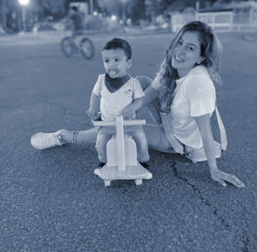
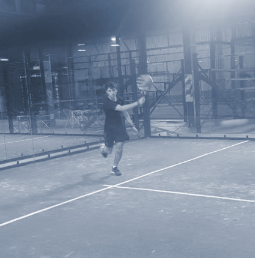
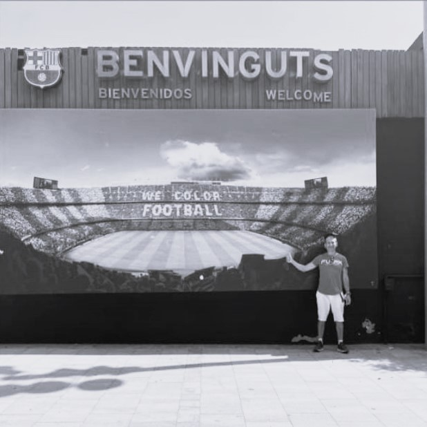
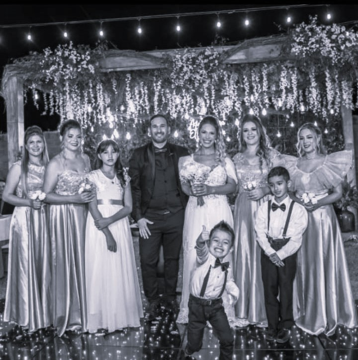

Gastón
Entreno con Gastón hace ya 1 año y me dedico a sistemas, soy ingeniero en sistemas. Empecé por la necesidad de verme mejor y entrenar para despejar y descargar luego de mi día laboral y gracias a su ayuda logré mantener un ritmo y una rutina, cada vez mejor y sin darme cuenta. Recomendaría a Gastón porque es sincero, responsable, sabe mucho sobre el tema y una persona que se prepara constantemente.

Sebástian
Entreno con Gastón hace 2 años. Me dedico a la aviación comercial. Empecé a entrenar con él para aumentar fuerza y volumen. Los planes de entrenamiento que arma son muy eficaces y me sirvieron para lograr mis objetivos. Lo recomiendo porque te guía y motiva a alcanzar lo que te propones.

Norma
Entreno con Gastón hace ya 5 años y me dedico Instrumentación Quirúrgica. Empecé por la necesidad de verme y sentirme mejor, gracias a su ayuda logré tonificar, mejorar resistencia para carreras. Recomendaría a Gastón porque hace un estilo de entrenamiento diferente e innovador, muy completo y optimiza todo lo necesario de aeróbico y pesas en solamente 1 hora siendo que el tiempo es lo más importante para mí.

Lucas
Entreno con Gastón hace ya 1 año y medio y soy estudiante de ingeniería. Empecé por la necesidad de ganar fuerza y masa muscular y gracias a su ayuda logré alcanzar estos objetivos y empezar a enfocarme en superarme aún más. Recomendaría a Gastón porque es un entrenador exigente y se preocupa de que sus alumnos nos esforcemos siempre al 100%.
Jorge
Comencé a entrenar con Gastón en septiembre del 2018, con grandes resultados desde el comienzo, adelgacé, cambie hábitos de alimentación, adquirí fuerza e incrementé mi masa muscular. Además gracias a su forma muy detallista y profesional también solucioné en gran parte un problema de espalda, súper recomendable y no dejen de comenzar a entrenar con él cualquiera sea el objetivo que quieran alcanzar.
Carolina
Este es el tercer año que entreno con Gastón! Mi trabajo es de oficina y estoy muchas horas sentada, con lo cual empezar el entrenamiento con la ayuda de un profe me cambió totalmente los dolores que padecía de cuello y espalda! Además de los logros en todo el cuerpo! Recomiendo 100% a Gastón por su profesionalismo a la hora de entrenar con él, por su paciencia constante con sus alumnos y por todos los logros que obtuve con él!

Miguel
Entreno con Gastón hace ya 4 años desde noviembre de 2019 y me dedico a la tarea de bibliotecario en la Biblioteca Municipal.
Empecé por la necesidad de mejorar mi salud mediante la actividad física . Gracias a ello logré cambiar mis hábitos alimenticios y descanso , entrenando cada día con gusto.
Recomendaría a Gastón porque como gran profesional se preocupa por el progreso de sus alumnos y eso es muy importante .
Ayelen
Entreno con gaston hace ya 1 año y trabajo en un laboratorio de alimentos y medioambiente. Empecé por la necesidad de tonificar y mantener el peso y gracias a su ayuda logré los cambios que buscaba. Junto con la correcta alimentación logre tonificar piernas y brazos
Recomendaría a gaston porque tiene mucho conocimiento y adecua la rutina a tus necesidades individuales. Siempre haciendo hincapié en la correcta técnica para evitar lesiones.

Carolina
Hola mi nombre es Andrea, trabajo como encargada de un hotel. entreno con Gaston hace más de 1 año ,empecé con él por que es muy profesional en su trabajo y gracias a su ayuda estoy logrando mi objetivo.
Recomiendo a Gaston como entrenador!!